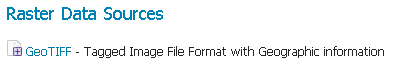

GeoTIFF¶
GeoTIFF는 지리정보가 포함된(georeferenced) TIFF(Tagged Image File Format) 파일입니다.
Adding a GeoTIFF data store¶
새 데이터 저장소를 추가할 때 기본적으로 Raster Data Sources 목록에 GeoTIFF 옵션이 보일 것입니다.

래스터 데이터 저장소 목록의 GeoTIFF 옵션
Configuring a GeoTIFF data store¶
GeoTIFF 데이터 저장소 설정하기
| 옵션 | 설명 |
| Workspace | GeoTIFF 저장소를 담기 위한 작업공간의 명칭을 선택합니다. 해당 저장소에서 생성될 래스터 레이어명의 접두사(prefix)가 됩니다. |
| Data Source Name | GeoServer가 인식할 GeoTIFF 명칭을 설정합니다. 파일명과 달라도 됩니다. 작업공간 명칭과 이 명칭을 합치면 레이어명(예시: world:landbase)이 됩니다. |
| Description | GeoTIFF 저장소에 대한 설명을 자유롭게 쓸 수 있습니다. |
| Enabled | 저장소를 활성화합니다. 체크를 해제할 경우 GeoTIFF의 어떤 데이터도 서비스되지 않습니다. |
| URL | GeoTIFF의 위치를 설정합니다. 절대 경로(예시: file:C:\Data\landbase.tif)가 될 수도 있고 Geoserver 데이터 디렉터리에 대한 상대 경로(예시: file:data/landbase.tif)가 될 수도 있습니다. |
다음: GTOPO30